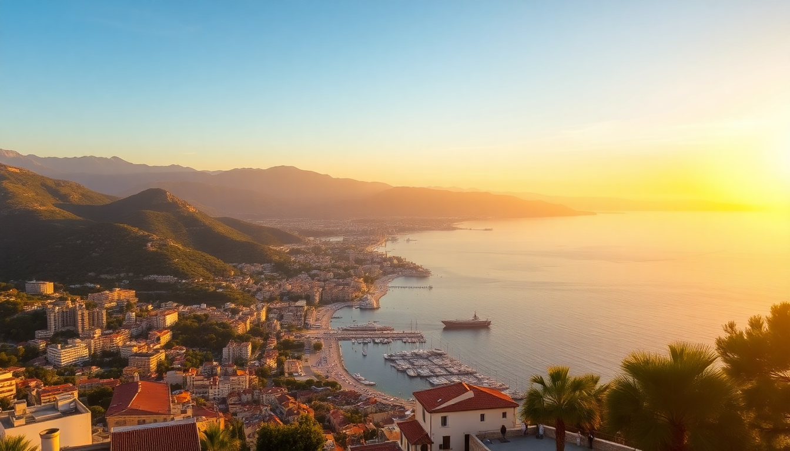

Best Time to Visit the French Riviera: A Seasonal Guide

I’ve spent a fair chunk of time bouncing between Nice, Cannes, Saint-Tropez, and Monaco across every season—sometimes on assignment, sometimes just because the light is impossible to resist. Here’s what I’ve learned about when to actually go, not when the Instagram influencers tell you to.
When is the best time to visit the French Riviera for good weather without the crowds?
Late May and early September. That’s the sweet spot. The Mediterranean is warm enough to swim (hovering around 20–22°C) and the sun is reliable, but the July–August crush hasn’t arrived or has just left. In May, the Mimosa Festival in Mandelieu is winding down, and the hills around Grasse still smell like jasmine. By September, the sea is at its warmest, and you can walk into most restaurants in Vieux Nice without a reservation.
- Nice – The Promenade des Anglais is busy but not shoulder-to-shoulder. Hit the beach at Castel Plage early.
- Cannes – Avoid the third week of May if you’re not here for the film festival. Hotels triple in price and La Croisette becomes a zoo.
- Saint-Tropez – September is perfect. The yachts are still there, but the parking situation improves dramatically.
- Monaco – Late May clashes with the Grand Prix. If you want quiet, skip that weekend.
What is summer like on the French Riviera, and is it worth the hype?
July and August are intense. I’m not going to sugarcoat it: the heat sits at 30°C-plus, the beaches are packed by 9 a.m., and hotel rates in Cannes and Saint-Tropez can hit €500 a night for a basic room. That said, the energy is electric. Night markets in Nice’s Cours Saleya overflow with lavender soap and socca, and the fireworks display over the Baie des Anges on August 15th is genuinely spectacular.
- Beaches – Public beaches like Plage de la Réserve in Nice are free but sardine-tight. Rent a chair at Blue Beach in Cannes for a more civilised setup.
- Traffic – The A8 motorway between Nice and Monaco turns into a parking lot on Saturdays. Take the TER train instead—€4.60 and no stress.
- Heat – I learned the hard way: don’t hike the Eze cliff trail at 2 p.m. Do it at 8 a.m. or skip it.
Is spring or autumn better for a budget-friendly trip?
Spring—specifically April and early May—wins for value. You’ll find rooms at the Hôtel de la Mer in Antibes for half the July rate, and the weather is pleasant (18–22°C) even if the sea is still too cold for a proper swim. Autumn (October) is cheaper still, but many coastal restaurants and beach clubs close after the first week of October. I once walked into La Petite Maison in Nice in April without a booking—unthinkable in August.
- April – The Nice Carnival wraps up mid-month. Book accommodation near Place Masséna early.
- October – The Menton Lemon Festival is over, but the old town is empty and lovely. Bring a jacket for evenings.
- November – Many hotels in Saint-Tropez shut down until March. Stick to Nice or Monaco.
What’s winter like on the Côte d’Azur?
Mild and quiet. December and January average 10–15°C, and you’ll have the Musée Matisse in Nice almost to yourself. The Christmas market in Cours Saleya sells mulled wine and roasted chestnuts, and the Monaco Christmas Village sets up near the Port Hercule with a skating rink. It’s not beach weather, but it’s perfect for hiking the Cap Ferrat coastal path or exploring hilltop villages like Èze and Saint-Paul-de-Vence without the selfie sticks.
- Nice – The Promenade is great for a morning run. Grab a hot chocolate at Fenocchio’s in the old town.
- Monaco – The Monte-Carlo Opera House has a winter season that’s world-class and half the price of summer.
- Cannes – The Palais des Festivals is quiet, but you can still walk La Croisette without dodging crowds.
How do major events affect the best time to visit?
Events dictate availability and price more than the weather does. The Cannes Film Festival (mid-to-late May) and Monaco Grand Prix (same weekend) spike prices across the entire coast, not just those cities. I once paid €300 for a basic room in Nice during the GP weekend—a room that cost €80 in April. If you’re not attending, avoid the last two weeks of May entirely. The Nice Jazz Festival (July) is more manageable; you can still find affordable apartments in the Port district.
- Cannes Film Festival – Avoid unless you have a badge. The city is closed to non-accredited visitors near the Palais.
- Monaco Grand Prix – Book a year ahead for anything near the circuit. The train from Nice runs late, so you can stay in Nice cheaply.
- Saint-Tropez – The Bravade (a local festival) in May is charming and low-key. No price spike.
Which month has the best swimming conditions?
September, without question. The sea has soaked up heat all summer and sits at a balmy 23–24°C. The air is still 25°C, and the UV index is lower than in July, so you can stay out longer without burning. I spent a week in September swimming at Plage de la Mala in Cap d’Ail—the water was glass-clear and the crowd was thin enough to find a spot on the rocks.
- Nice – Plage Beau Rivage has a roped-off swimming area that’s clean and calm.
- Cannes – Head to Plage du Midi, west of the port. Less glitzy, more locals.
- Monaco – Larvotto Beach is free and pebbly. Bring water shoes.
FAQ
Is the French Riviera worth visiting in the off-season (November–February)? Yes, if you’re after culture and hiking rather than swimming. The weather is mild, crowds are thin, and hotel rates in Nice drop to €60–80 a night. The Musée d’Art Moderne in Nice and the Oceanographic Museum in Monaco are open year-round. Just pack layers—the Mistral wind can be biting.
What’s the cheapest month to fly into Nice Côte d’Azur Airport? January and February. I’ve seen round-trip flights from London for under £50. Hotels in Nice’s Jean Médecin district are also at their lowest. The catch: some restaurants in Saint-Tropez and Cannes close for annual leave, so you’ll eat more in Nice or Monaco.
Should I rent a car on the French Riviera? Only if you’re staying outside the main cities. Parking in Nice, Cannes, and Monaco is expensive and scarce—I’ve paid €30 for an hour in a Monaco garage. The TER train network covers all four cities cheaply and reliably. Rent a car only for hill towns like Gourdon or Tourrettes-sur-Loup, where the bus runs twice a day.
Conclusion
- Best overall months: Late May and September for weather, crowds, and price balance.
- Best for swimming: September, when the sea is warmest and the beaches are emptier.
- Best for budget: April and October, with low rates and mild temps.
- Avoid: Last two weeks of May (Cannes Film Festival + Monaco Grand Prix) unless you’re attending.
- Best for peace: November–February, if you’re fine skipping the beach for museums and hiking.